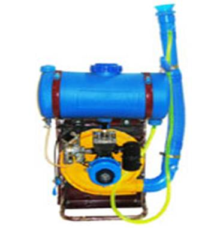
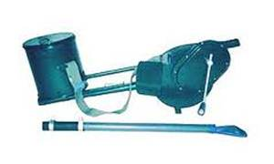

GPBR112 :: Lecture 12 :: SPRAYERS AND THEIR FUNCTIONS, CLASSIFICATION, MANUALLY OPERATED SPRAYERS, POWER SPRAYERS - DUSTERS, TYPES AND USES SPRAYERS

Sprayer is a machine used to apply liquid chemicals on plants to control pest and diseases. It can also be used to apply herbicides to control weeds and to spray micro-nutrients to enhance plant growth
The main functions of a sprayer are
- Breaking the chemical solution in to fine droplets of effective size.
- Distributing the droplets uniformly over the plants.
- Applying the chemicals with sufficient pressure for positive reaching the plants
- Regulating the amount of liquid applied on plants to avoid excessive application.
Desirable quality of a sprayer
A good sprayer should posses the following qualities- It should produce a steady stream of spray material in desired droplet size so that the plants to be treated may be covered uniformly.
- It should deliver the liquid at sufficient pressure so that the spray solution reaches all the foliage and spreads uniformly over the plant body.
- It should be light in weight yet sufficiently strong, easily workable and repairable.
DIFFERENT SPRAYERS AT A GLANCE
| Hand‑held‑sprayers | Nozzle and pump of hand-held sprayer | Backpack sprayer |
| Knapsack Hand Sprayer | Stainless Steel and Brass knapsack sprayers | Brass tank knapsack sprayers |
| Stirrup sprayer | Rocker sprayer | Hand compression spray |
| Pedal operated pump | knapsack power sprayer | Knapsack Power Sprayer cum duster |
| High power pump for sprayers | Trailer Sprayer (with Snyder Super poly Tank) | 300 gallon 3pt. mounted sprayers |
| Tractor mounted field sprayers | Trailer type Orchard sprayers |
BASIC COMPONENTS OF A SPRAYER
Components of a sprayer are as follows
- Pump b) Chemical tank c) agitator d) Air chamber e) pressure gauge f) Pressure regulator g) valves h) Strainer i) suction line j) delivery line k) nozzles
Pump : A pump is a device used to move fluids, such as liquids or slurries, or gases from one place to another. A pump displaces a volume by physical or mechanical action. Most hydraulic sprayers are equipped with positive displacement pumps capable of developing pressure, required for many spraying jobs. The discharge capacity of these pumps is approximately proportional to the speed. A pressure relief valve or by-pass valve is required to protect these positive acting pumps from damage when the discharge line is closed and for the convenience of the operator.
Tank: It is the container to hold the chemical solution. It is made up of PVC, Brass, etc. It is usually made of metal sheet or synthetic rubber or plastic having good resistant quality against corrosion, erosion, and similar actions. The size of the tank varies according to the pump capacity and the requirements.
Agitator: It is the device which stirs the solution and keep the contents in homogenous condition. Positive agitation of spray material in the tank is essential to permit using the full range of spray materials including powdery emulsions, fungicides, cold water paints or other spray material. The propeller or paddle type mechanical agitators or hydraulic agitators are very common.
Air chamber: In a reciprocating type pump, an air chamber is provided on the discharge line of the pump to level out the pulsations of the pump and thus providing a constant nozzle pressure
Pressure gauge: It is a dial gauge which indicates the pressure at which the liquid is delivered from the pump.. A pressure gauge properly calibrated, within the pressure range of the pump is provided on the discharge line to guide the operator for making proper adjustment of the pressure at site.
Pressure regulator: The pressure regulator serves several important functions. It is the means of adjusting the pressure as required for any spray job with in the pressure range of the pump. With the positive displacement type of pump, it also serves as a safety device in automatically unloading the excess pressure by directing the unused discharge flow from pump back to the tank.
Valves: A valve is a device that regulates the flow of a fluid (gases, liquids, fluidized solids, or slurries) by opening, closing, or partially obstructing various passageways.
Cut-off valve is provided in the delivery line to control the flow from the pump,
By-pass valve is provided in the delivery line to by-pass the flow from pump to tank when flow in delivery line is reduced than the pump capacity
Relief valve - It is an automatic device to control the pressure of fluid or gas within a range a predetermined pressure.
Strainer : It is a small circular plastic ring with nylon wire mesh to filter any dust particle coming with the chemical solution It is included in the suction line between the chemical tank and the check valves. In some sprayers strainers are provided at the mouth of the chemical tank. Eg. Knapsack sprayers
Nozzles : It is the component which breaks the fluid in to fine droplet . Automation of spray fluid is usually achieved by discharging the liquid through an orifice called nozzle under pressure. Atomization is also achieved by breaking up the jet of liquid with a blast of air.
Spray gun - It is a hand held metallic of PVC pipe to one end of which the nozzle is fitted and a flow cut off valve and a handle are fitted at the other end. The delivery hose is connected to the spray gun. It conducts the fluid from the delivery hose to the nozzle. The operator holds the gun and does the spraying job. Area of coverage by a spray gun is less compared to the coverage of a spray boom. Spray guns are used with low power sprayers E.g. Knapsack sprayers, rocker sprayer
Spray boom - It is a long metallic or PVC pipe to which several nozzles are fitted with. The delivery hose is connected to the spray gun. High power and high capacity sprayers use spray booms. The coverage is larger compared to spray guns. Booms are usually mounted on suitable structures and used. E.g. Tractor operated sprayers, power tiller operated sprayers
Over-flow pipe - It is a conduit pipe through which excess fluid from a pump is by-passed in to chemical tank by the action of a relief valve or pressure regulator.
COMPONENTS A OF NOZZLE
Nozzle body - It is the main component which encloses all other components of a nozzle
Swirl plate - It is metal disc with two tangential holes which imparts a swirl or rotation to the liquid passing through it
Nozzle disc - It is the component which breaks the fluid in to fine droplet. It is a flat disc with an orifice at the centre. When the spray solution reaches the disc from the swirl plate the disc builds up further pressure on the fluid and when the fluid passes out of the orifice, it breaks in to fine droplets . The disc has a specific design to impart a hollow cone or solid cone or a flat fan type of discharge to the outgoing fluid.
The popular nozzles are a) hollow cone b) solid cone c) fan or flat type
Strainer- It is a small circular plastic ring with nylon wire mesh to filter any dust particle coming with the chemical solution
Spacer: There are two number of runner/ plastic rings placed in between nozzle plate and swirl plate and between swirl plate and strainer for effective travel of the solution
TYPES OF SPRAYERS
Based up on the volume of liquid handled ,sprayers may be classified in to
- High volume sprayer (more than 400 litres /ha)
- Low volume sprayer (5 to 400 litres/ hectare)
- Ultra low volume sprayer (ULV) spray (less than 5 litres /ha).
The selection technique depends up on type of vegetation, kind of pests and approach to the field.
ULTRA LOW VOLUME SPRAYER
ULV Sprayer is used to spray chemicals on row crops like cotton, cowpea, groundnuts , tobacco and vegetables. It is ideally suited for home gardens. It is a hand-held sprayer with a spinning / rotating disc designed for ultra-low volume (ULV) and controlled droplet application of insecticides, fungicides, pesticides, herbicides and all liquids. Rotating disc technology ensures efficient liquid atomization to give appropriate droplet size. ULV formulations are applied at only 2.5-7.5 litres / ha. One hectare of crop can be treated in around 2.5 hour
HAND ATOMIZER
This sprayer is also ideally suited for home gardens and small fields. It consists of a container of 0.5 to 3.51it capacity a built in air pump, pressure gauge , nozzle and flow cut off lever. The tank is to be filled with ¾ th volume. The pump is operated to build pressure in the tank of 0.15-0.3 kg/cm2 . When the flow cut off lever is pressed , the fluid passes through the nozzle and spraying is done. The application rate ranges from 45 to 100 litres /ha.
Hand atomizer |
HAND COMPRESSION SPRAYER
It is suitable for applying chemicals for field crops and lawns. Similar to hand atomizer this sprayer also consists of a tank of 10-12 lit capacity for holding spray material , a vertical air pump , pressure gauge, filling port, spray lance , nozzle and a flow control lever. The chemical tank is filled 75-80 % volume .The pump is operated to pump air in to the tank to build pressure up to 2.0 – 3.5 kg/cm2. When the flow cut off lever is pressed, the fluid passes through the nozzle and spraying is done. The sprayer is carried on the shoulder of the operator. The application rate ranges from 45 to 100 litres /ha.
Hand compression sprayer |
KNAPSACK SPRAYER (HAND OPERATED)
This sprayer is suitable for applying chemicals to several field crops. The operator carries the sprayer on his back and hence the name knapsack sprayer. It has a flat or bean-shaped tank of 10-15 litres capacity., a hydraulic pump fitted inside the tank, a handle to operate the pump, agitator, filter, delivery hose, and spray gun with nozzle and flow control lever. The tank is made of either brass or PVC material. The tank is filled with chemical solution. When the pump is operated, it draws the fluid through the suction hole and delivers it to the spray gun, When the cut off lever is pressed spraying is done through the nozzle as fine droplets. The pressure developed in these sprayers depends on the pump and varies from 3 to 12 kg/cm2 The application rate is 500 lit/ha. The coverage is 0.5-1.0 ha/day.
Salient features of knapsack sprayers.
1. Useful to develop high pressure with less effort.
2. Light in weight and easy to carry on the back of the operator..
3. High work rate and economical.
4. Robust and simple to maintain.
5. Both left and right hand operation
6.10-15 lit. capacity
7. Easy to spray chemicals.
ROCKER SPRAYER
Rocker sprayer is mainly used for spraying fruit trees in orchards, coconut and areca nut trees, flower gardens, and cotton and tapioca fields. It consists of a piston type pump, a platform with fork, a lever to operate the pump, pressure chamber, suction hose with strainer, delivery hose, and a spray gun with flow control knob and nozzle. The pump builds up a pressure up to 14-18 kg/cm2 which facilitates the use of the sprayer for tree spraying. The Pressure chamber helps for continuous spraying. The chemical is taken in a separate container and the suction hose is kept in the chemical container. When the pump is operated, it draws the fluid through the suction hose and delivers it to the delivery hose through the pressure chamber. When the flow control knob is turned, the fluid is sprayed through the nozzle. The output of the sprayer is 70-90 lit/hr with one nozzle. Coverage is about 1.5 ha/day.
| Rocker sprayer | Rocker sprayer |
Rocker sprayer
FOOT OR PEDAL OPERATED SPRAYER
The foot or pedal sprayers, as they are commonly called, consist of a plunger assembly, stand, suction hose, delivery hose, spray gun with a nozzle etc. One end of the suction hose is fitted with a strainer and the other end is connected to the pump inlet opening. Similarly, the delivery hose is fitted at one end to the delivery opening of the pump and the other end to the spray gun. Constant pedaling is required for continuous spray. It develops a pressure of 17-21 kg/cm2. The chemical is taken in a separate container and the suction hose is kept in the chemical container. When the pump is operated by the foot, it draws the fluid through the suction hose and delivers it to the delivery hose. When the flow control lever is pressed, the fluid is sprayed through the nozzle. Agitation of chemical solution is done by supplying a portion of air from the blower, The discharge rate with one nozzle is 110-135 l/hr and coverage is 1.0 ha/day
KNAPSACK MOTORIZED MIST BLOWER CUM DUSTER
It is the simplest engine driven sprayer used in agriculture. It is carried on the back of the operator. It is used for spraying to all types of field crops most popularly to paddy, groundnut, cotton and vegetable crops. It consists of a 1.2- 3.0 hp high speed petrol engine, a blower, a 12 lit chemical tank, delivery hose, fleeted air hose, flow regulator knob and a plastic atomizer grate. The tank is filled with the required chemical solution. When the engine is started, the blower generates a high velocity air to which the chemical solution is fed. The chemical mixed air stream is broken in to fine droplets at the atomizer grate and sprayed. . By changing few parts the sprayer can be converted in to a duster.
|  | |
| Motorized Knapsack sprayer | Motorized Knapsack sprayer |
Motorized Knapsack sprayer spraying chemicals to wheat crop.
CONVERSION OF A MIST BLOWER IN TO A DUSTER
- Replace the liquid delivery hose by a bigger diameter pleated hose to carry the powdery chemical from the tank into the air stream
- Provide a air distributor at the bottom of the tank for stirring and keeping the chemical in suspended form
Motorized Knapsack duster
POWER SPRAYER
It is a heavy duty and efficient sprayer. It consists of a triplex pump with stainless steel piston with oil bath lubrication. It can Develops 250 to 350 pounds pressure and can deliver the solution up to 15 m.. It can be powered by a 3 HP engine or electric motor .It is convenient to spray with 4 to 6 spray lances at a time using the sprayer. There are sprayers can be operated by tractor PTO as well as by a power tiller..
Power sprayer
DUSTER
Duster is a machine used to apply chemicals in dust form. Dusters make use of air stream to carry pesticides in finely divided form on the plants. A duster essentially consists of
1. Hopper 2. Agitator
3. Feed control 4. fan or blower
5. Delivery nozzle
Types of dusters
1. Plunger type 2. Knapsack type
3. Rotary type 4. Power operated duster
- Plunger type - it is a simple duster with a small piston. The piston drives a current of air over the dust in the hopper. The dust is carried away through a delivery spout. Small hand pump dusters of this type are available and are suitable only where the area to be dusted is small like vegetable gardens
- Knapsack type - It is a duster with the powder container carried on the back of the operator. Knapsack dusters have a hopper through which a current of air is blown to pick up the dust. The air current is produced by a lever operated leather bellows. Shoulder straps are used to carry in the field. These dusters are suitable for small areas.
- Rotary duster – Hand rotary dusters are useful to apply chemicals which are in powder form. It consists of a hopper, a fan, gear box, handle, delivery hose and a deflector plate. When the handle is rotates the fan rotates at high speed and draws air from outside. The chemical from hopper is fed in to the air stream in the suction side of the fan. The chemical mixes with the air, passes through the delivery line and is applied on the plants. The rate of delivery can be regulated It is used to apply powdery chemicals to vegetables, sorghum etc. crops.
 |
 Hand rotary dusters |
- Power operated duster- Power operated duster mainly consists of a power driven fan, a hopper and a delivery spout. The fan creates strong air flow which causes the dust to blow off from the hopper to a considerable distance vertically or horizontally. Direction of dust is regulated by a movable spout suitably fitted with the unit. This type of dusters are used for large areas
Power operated dusters
5. Arial duster or crop duster - an aircraft is used for dusting or spraying large acreages with pesticides. Aerial spraying and dusting permit prompt coverage of large areas at the moment when application of pesticide is most effective and avoid the need for wheeled vehicles that might damage crops. The technique was greatly improved in the 1960s with the development of ultra-low-volume applicators, in which concentrated pesticides are distributed in amounts as small as 1 ounce per acre (70 grams per hectare).
Arial dusting
Important terms
- suction capacity of power sprayer- plunger type
Q = 2 x L x n x 10 -6
Where
Q- theoretical suction capacity in lit/min
D- diameter of plunger, mm
n- rev/min
L- stroke length, mm
B) Volumetric efficiency
Actual suction capacity
= ---------------------------------------- x 100
Theoretical suction capacity
C) Pump efficiency
Water horse power
= --------------------------------- x 100
Shaft horse power
Water horse power, kW
= kW
MODEL QUESTIONS
1. State the functions of sprayer
2. Furnish the classifications of sprayers
3. List the advantages of sprayers
4. Mention the components and operation of hand sprayer
5. Mention the components and operation of power sprayer
6. Explain about different types of nozzles
7. Mention the components of rocker sprayer with a neat sketch and explain their
Importance
8. When several nozzles are fitted in a pipe it is called as Spray gun True / False
9. In battery operated sprayers the component which breaks the chemical
Solution in to fine particles is called
a. spray gun b. nozzle c. spinning disc d. none
10. The chemical solution requirement of a sprayer is 80 lit/ha. The sprayer can
be classified under
a. high volume sprayer b. low volume sprayer
c. ultra low volume sprayer d. none
11, Sprayers can be used to apply
a. herbicide b. fungicide c. insecticide d. all the three chemicals
12. Which of the following components of a sprayer is very important?
a. Spray gun b. Cut-off lever c. Nozzle d. Strainer
13 Cut off valve is fitted between pump and nozzle of a
sprayer and is used to control the flow of chemical
solution to the nozzle True / False
14. Explain the components and working of motorized knap sack
Sprayers
15. State the advantages of knapsack motorized mist blower compared to hand sprayer
16. Explain the parts and working of battery operated sprayer
17. How will you convert a mist blower into a duster?
18. Differentiate compression sprayer and battery operated sprayer.
19. Calculate the water power which is required to discharge liquid @ 30 lit/min at 30 kg/cm2 pressure
20. In a pump, suction volume is 25 lit/min and pump efficiency is 85%. Calculate the
shaft power at a pressure of 35 kg/cm2
| Download this lecture as PDF here |